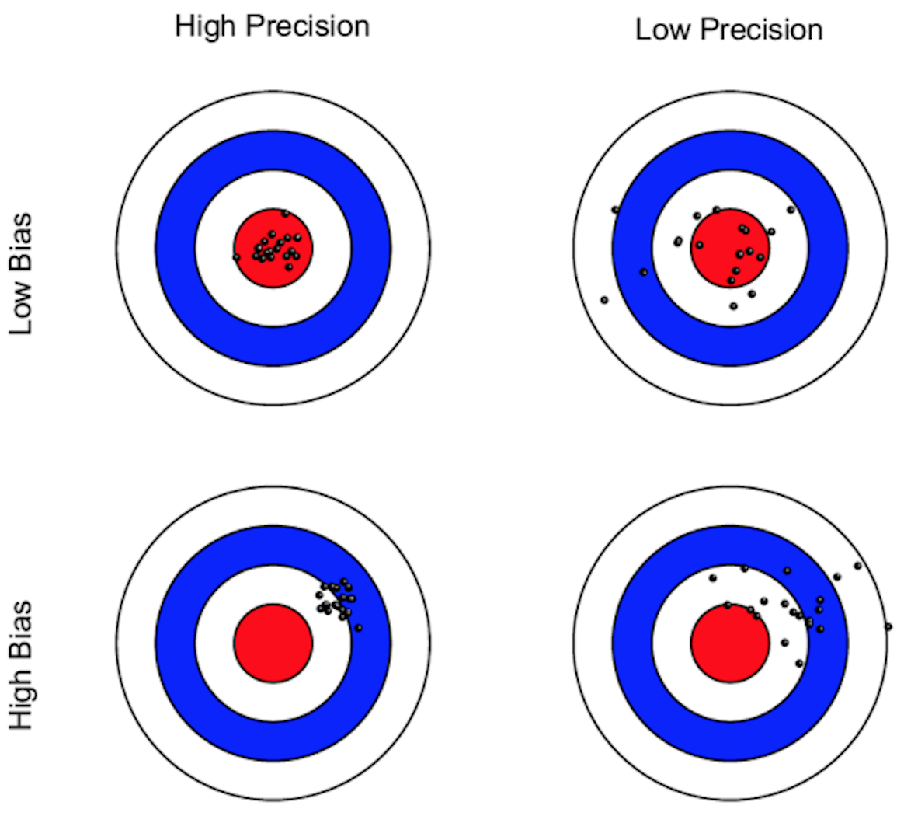

What is an example of a concept, like an outcome, you’d like to change with an experimental treatment?
How would you know that a unit (like a person or a village) displayed high or low “ability” or “rank” on that concept? (Was “hungrier” or “happier” or “more peaceful?”) What might you observe that would make you feel more or less confident that this person was hungrier or happier or less supportive of violence than this other person?
What criticisms might you face if you said, “I think that this unit differs from this other unit on my conceptual outcome?”
Note: we are talking about “measurement validity” here.
Does this measure “math ability?” Or knowledge of boating? “A boat that can make forty miles an hour in still water makes a trip of one hundred miles down a certain stream. If this trip takes two hours, how long will the return trip take?” (from the 1926 SAT in the USA)
Does this measure “verbal ability?” Or knowledge of boating?
Choose the pair of words most like the top pair:
Runner : Marathon a) envoy : embassy b) martyr : massacre c) oarsman : regatta d) horse : stable
Correct answer is: c) oarsman : regatta. (from the 1980s SAT in the USA)
We often have multiple theories for how an intervention might affect an outcome (different mechanisms).
Measure indicators that are unique to each mechanism and that can help differentiate between them.
Such indicators might include intermediate outcomes that are realized before the final outcome.
They may include secondary outcomes such as
Select indicators that closely connect to the what we mean when we talk about the phenomenon of interest. Select valid indicators. Ex. Math measures should not also measure boating knowledge.
Select indicators that are reliable. Ex. A meter stick should always measure a meter no matter the temperature. A rubber meter stick can produce unreliable measurements of the abstract concept of length, especially if used by a 5 year old. A laser might produce more reliable measurements than even a wooden meter stick in the hands of a skilled user of wooden meter sticks.
After we determine what concept to measure and how we might know it when we see it, we need to figure out how to measure it.
You need to maintain symmetry between treatment and control groups as you do the measurement.

Systematic error
Random error
Notice that these are examples of unreliable measurement. They could also be invalid, but need not be.
In addition to generating an incorrect description of the level of some phenomenon, measurement error can affect our causal inferences.
If the treatment variable is binary (a unit can be in treatment or control only), then measurement error is negatively correlated with the true variable. (A 1 is miscoded as 0, so the error is -1; a 0 is miscoded as 1, so the error is 1.)
If you use OLS to calculate estimators of average treatment effects, this kind of error leads to smaller estimates of the causal effect (coefficient on the treatment variable).
In an OLS analysis, greater random error in the outcome variable leads to less precise estimates of the causal effect (coefficient on the treatment variable).
Reducing random measurement error in the outcome can increase statistical power (because the outcome has less non-treatment related noise.)
If all measurements are off by the same amount, like -2kg for everyone:
\(\tau_i = Y_i(1)-Y_i(0)\), \(\tilde{\tau_i} = (Y_i(1)-2)-(Y_i(0)-2)\), so \(\tau_i = \tilde{\tau_i}\)
\(\tau_i = Y_i(1)/Y_i(0)\), \(\tilde{\tau_i} = (Y_i(1)-2)/(Y_i(0)-2)\), so \(\tau_i \neq \tilde{\tau_i}\) except when \(Y_i(1)=Y_i(0)\).
How far off \(\tilde{\tau_i}\) is from \(\tau_i\) depends on how large 2 (the error) is relative to the actual values \(Y_i(0), Y_i(1)\).
Notice that logistic regression coefficients are ratios of potential outcomes.
Measurement error may be correlated with the true value of \(Y\).
For example, people who engage in frowned-upon, embarrassing, or illegal behavior may under-report that behavior, while those who do not may report their level accurately. (This is known as social desirability bias.)
This makes is more difficult to detect an effect of an intervention designed to reduce this behavior.
Another form of social desirability bias may also lead to measurement error being correlated with the treatment.
For example, your intervention might aim to reduce hostile attitudes towards members of other social groups. If participants can figure out the goals of your study, they may (subconsciously) try to please the researcher by telling him what he wants to see. Those in the treatment group may under-report their hostility towards other groups compared with the control group.
This makes it difficult to know whether the difference in observed outcomes between treatment and control groups is due to the intervention actually reducing hostility or knowledge of the treatment changing reporting of hostility.
Some options:
Self-reporting by a subject (on a survey) is more problematic than unobtrusive observation of the subject (“in the wild”) by someone else.
Behavioral measures are less subject to social desirability bias.
Administrative records for which misreporting has legal penalties might be more accurate.
Providing more privacy so that scoring can happen without observation by others or the experimenter.
Keeping some hypotheses and aims of the study hidden from study participants.
If you can’t control measurement error, study it — figure out whether it’s a problem and how large. Consider measurement oriented pilot studies.
Attendance records for a meeting, instead of asking whether someone attended.
Ask subjects to induce effort like sign a petition, make a donation, or do some other task which has a small personal cost, instead of asking subjects whether they support a particular issue.
Play “lab games” to measure cooperation or generosity towards out-groups, instead of asking subjects whether they would cooperate with others.
Provide “cover” so that respondents believe that their responses cannot be traced back to them.
List experiments: give respondents a list of items or statements and ask how many many are true for them. Respondents are randomized into seeing different lists, where one contains an additional sensitive item (ie “my husband beats me”). This allows the researcher to estimate the prevalence of a particular item. Note that this approach reduces power for a given sample size.
Simple privacy: for questions such as vote choice, ask the respondent to fill out a mock ballot and place it in a locked box instead of responding directly to the enumerator.
Reducing measurement error is important, but can be quite costly. So how much do you need to do?
Depends on the scale and your goals.
Start with standard practice for your indicators; indicators that the community of researchers has agreed represent the concept of interest. These will have been road-tested for you and comparability of measures across research studies and sites is a virtue.
But be careful to consider whether standard indicators make sense. For example, how one measures income might differ between rich and poor areas. Similarly, how one measures political attitudes might differ in more or less democratic regimes.
Recall that the boating related measures of math and verbal ability were standard practice in the 1920s and 1980s in the USA. Remember that you are measuring social constructs and thus must pay attention, as much as you can, to what prior partially or unexamined beliefs you and the community of researchers bring to the study (for some more vivid examples of this issue see Gould ([1981] 1996)).
Connect with other researchers in your subject area.
Focus on finer measurement in the range of the variable where you expect change.